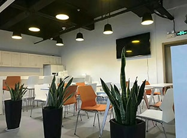
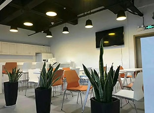
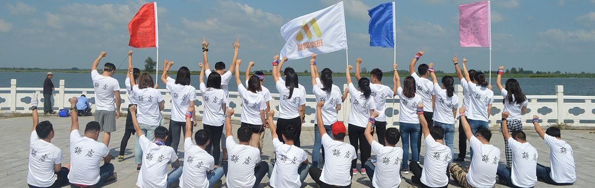
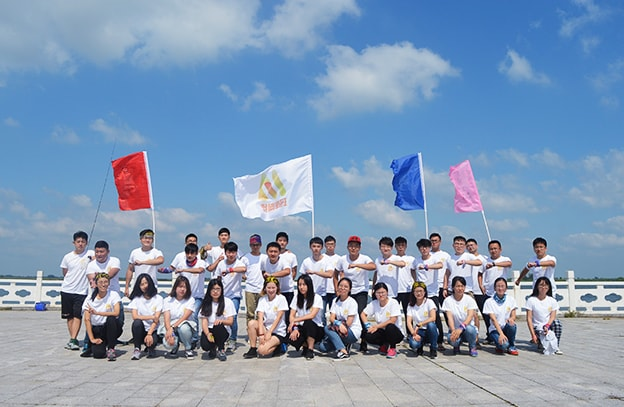
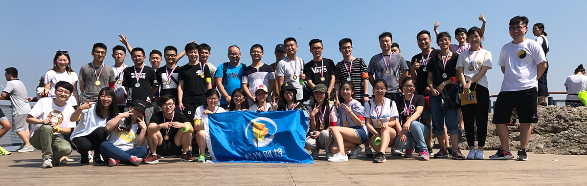

我们的故事
20132014
07玛岸成立
07玛岸第一款手游上线
08月活跃用户达到400万
2013年7月，怀着创业初期没有收入的忐忑以及对未来发展向好的想象与期待，四位公司创始人决定从移动终端游戏开发切入，着手准备开创一番事业。
这一年，在距离市中心40多公里的科技园内，公司初步成立。
玛岸成立
/
07/2013 首款手游上线
/
07/2014
2014年7月，玛岸第一款手游研发成功，同年8月，月活跃用户就已达400万，这为公司带来了第一笔扩大规模的资本。公司开始稳步上升发展。/
07/2013 首款手游上线
/
07/2014

20152016
02发行平台和支付平台上线测试，业务开始实现多样化发展，公司规模也不断扩张
12公司营业收入达2442万元。
04收购了位于北京、成都的3家全资子公司
12《在新疆也成立了全资子公司
分别负责公司影视、小说、音乐版权IP运营及发行，全部产品的推广以及国家版权资质等其他证书的办理。
2015年2月，发行平台和支付平台上线测试，业务开始实现多样化发展，公司规模也不断扩张。同年12月，公司营业收入达2442万元
在北京收购三家子公司
在新疆创办子公司
/
12/2016

公司的团队是颇具活力的创业团队，奉行共享的理念。创业团队从自己的经历出发，把员工的目标纳入计划，将每个参与团队的人都看作是一个创业者，乐于将团队的成果与大家分享，用股权激励制度让大家享受公司的免费股权。
第一次股权激励大会
/
05/2011 成立长沙分公司
/
11/2017
2017年11月成立长沙分公司，开展互联网电竞业务。/
05/2011 成立长沙分公司
/
11/2017

公司布局未来产业的思路是:
打造移动互联网端的泛娱乐公司，包括视频、音乐、媒体、
广告、动漫、游戏以及互联网体育。公司的结构也从研发
部、行部发生了变换，增加了商务中心、产品运营等各个
专项部门，公司结构不断完善。 现在资本方已经完成的
4000万A轮投资， 公司今年业绩对赌2000万，预估会有
3000万的净利润， 对应公司估值是4亿—5亿，发展顺利
的话会考虑选择并购几家主板上市公司，从无到有地参与
运营商的项目策划，从而顺利的完成收购。

资本方已经完成的4000万A轮投资
/
07/2017
